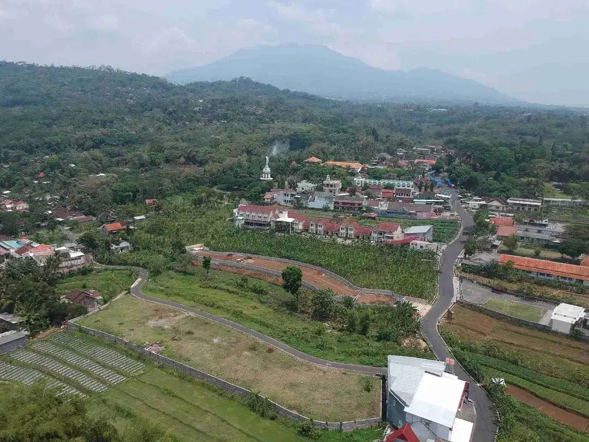

Investasi
Prospek Investasi Tanah di Ambarawa 2026: Masih Menjanjikan?
Update September 2026 · Bacaan sekitar 6 menit

Kalau Anda sedang memikirkan investasi tanah di Jawa Tengah, Ambarawa pantas masuk daftar. Bukan karena “lagi viral”, tapi karena kombinasi lokasi, infrastruktur, dan arus wisata yang memang sedang berjalan.
Ambarawa di tengah segitiga JOGLOSEMAR
Ambarawa duduk di posisi strategis antara Yogyakarta, Solo, dan Semarang. Begitu akses semakin lancar, minat terhadap lahan di sekitarnya biasanya ikut naik — pola yang sudah sering terjadi di daerah lain yang dilalui tol.
Tol yang mulai “hidup”
Ruas Tol Yogyakarta–Bawen, khususnya seksi Ambarawa–Bawen, dijadwalkan beroperasi lebih penuh di 2026. Exit Tol Ambarawa memendekkan perjalanan ke kota besar. Media seperti Kompas dan laporan Jasa Marga (dikutip Merdeka.com) menyebutkan pengoperasian fungsional hingga operasional penuh sepanjang 2026.
Wisata yang terus menghidupkan kawasan
Museum Kereta Api Ambarawa mencatat ratusan ribu pengunjung (data RRI/ANTARA 2024–2026). Goa Maria Kerep juga rutin kedatangan peziarah. Arus orang ini membuka peluang hunian tenang, rumah peristirahatan, atau homestay.
Yang perlu diingat sebelum beli
- Sertifikat sudah SHM dan idealnya pecah per kavling
- Status lahan non-pertanian / pekarangan
- Akses jalan yang masuk akal
- Lokasi tidak jauh dari jalan utama atau objek yang ramai
Pilihan di Kerep, Ambarawa
Di Nirwana Kerep, kavling sudah mengarah ke kriteria di atas: SHM pecah, non-pertanian, dekat jalan nasional. Harga mulai sekitar Rp 2,75 juta/m², dengan free notaris, free pajak, dan free desain arsitektur. Saat ini tersisa terbatas.
Sumber: Kompas.com (Tol Ambarawa–Bawen); Merdeka.com / Jasa Marga; RRI & ANTARA (Museum Kereta Api); Media Indonesia / Rumah123.